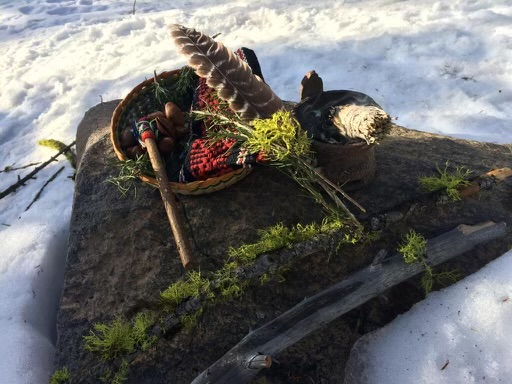
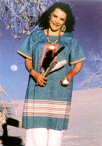

An Indigenous Approach to Healing
Curanderismo is a traditional folk medicine of Mexico that holds each person as a sacred being, an integration of body, mind, heart, and spirit. It recognizes the role of the family, community and nature when working to bring the person back into balance and harmony. Although there are different types of curander's, e.g. yerberos (herbalists), parteras (midwives) & sobaderos (masseurs), the modality we use is that of a consejero or counselor.
Some of the approaches used include the platica, the limpia and the soul retrieval. The platica is a heart-to-heart dialogue & relationship that fosters trust and facilitates the healing journey. The limpia is a soul-cleansing rite that uses herbs, feathers, copal, the conch, drum, etc to help release unwanted energies. The soul retrieval is a four directional ceremonial process that helps to re-integrate loss parts of oneself to feel whole again.
Corazón Cura Corazón


In curanderismo, the heart is key to healing - an agreement is made that one listens and speaks from this “core-zone.” Natural objects such as feathers, rocks and crystals are used in conjunction with talking therapy. For limpias, sage, cedar or copal (resin) are burned to make purifying smoke. Altars contain symbols of the four elements -- earth, water, fire and air -- and other forces which are called upon to assist in healing. Candles, religious statues, flowers and herbs are also included. Everything in the curandero's healing practice and lifestyle is infused with a relationship to Spirit and nature.
Wm Guillermo is an initiated curandero who completed his apprenticeship under the tutelage of Elena Avila, RN, MSW curandera and international practitioner of integrative medicine. She is the author of Woman Who Glows in the Dark, A Curandera Reveals Traditional Aztec Secrets of Physical and Spiritual Health.

“Under our very eyes, contemporary health care is being revolutionized—not only by dramatic advances in science and technology but by an increased acceptance of the validity of ancient and native medicines. Curanderos and curanderas are practitioners of an ancient and culturally-rich health care system called curanderismo. I am proud to add to this elite group Guillermo Ortiz, a curandero who excelled as an apprentice while under my tutelage and I highly recommend him to anyone who wants to explore the evolution of their souls and spirits.”~Elena Avila, MSN, RN, Curandera
I was also fortunate to have met and spend time with Elena's teacher, Miktlan Ehekateotl Kuahtlinxan, who had an active role in my initiation. As a 13th generation curandero in the Tezcatlipoca tradition, he is featured in the documentary Serpent and the Sun.